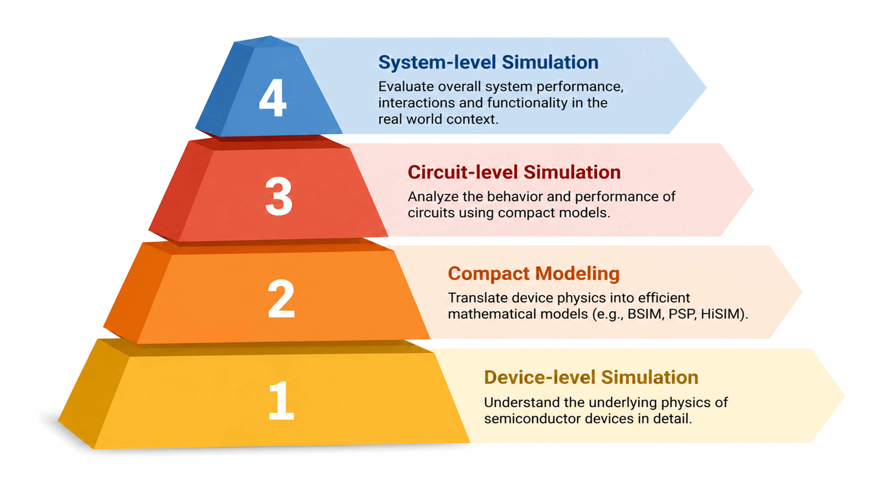
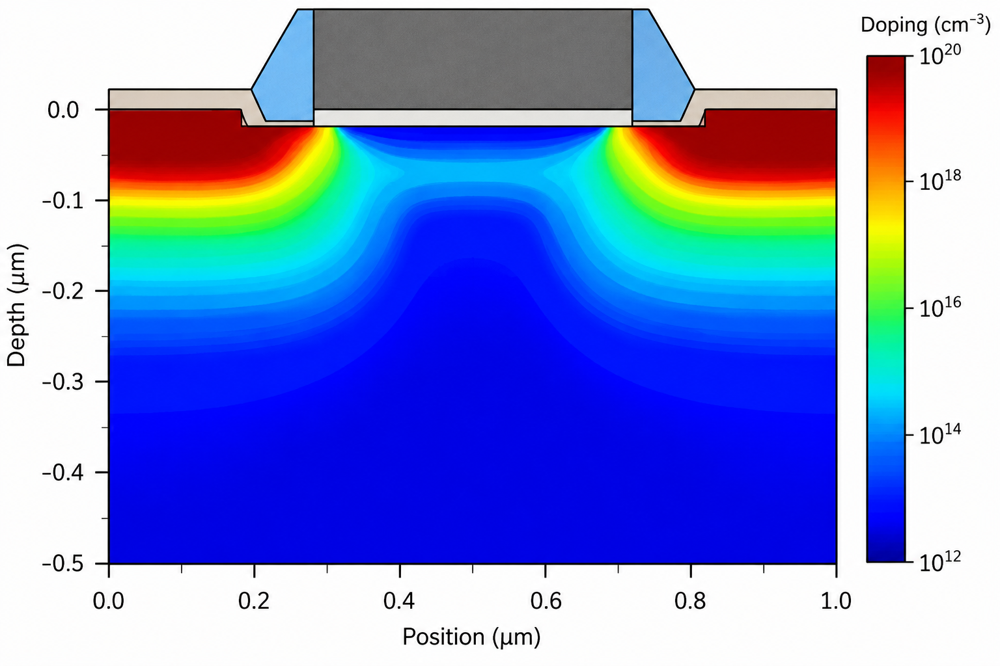
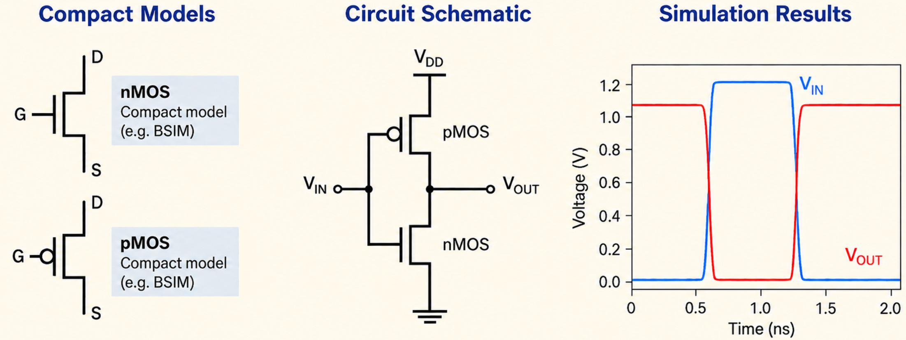

Modern electronic systems span an enormous range of scales, from physical processes inside individual semiconductor devices to the behavior of complete electronic systems. No single model can capture all these levels efficiently, which is why semiconductor simulation is organized into a hierarchy of abstraction, as illustrated in Figure 1. At the lower levels, the emphasis is on physical detail and device behavior, while higher levels progressively trade this detail for computational efficiency and the ability to simulate increasingly complex circuits and systems. The central challenge is therefore to choose the level of abstraction that provides enough detail to answer the engineering question at hand.

Device-Level Simulations: Physics at the Core
At the device level, the question is not simply what does the transistor do?, but why does it behave that way? Device simulation explicitly represents the semiconductor structure, including its geometry, materials, doping profiles, interfaces and operating conditions, and uses numerical methods to calculate quantities such as electrostatic potential, carrier concentration, current density and electric-field distributions.
The most widely used industrial framework is Technology Computer-Aided Design (TCAD), which typically solves Poisson’s equation together with carrier-transport models such as drift-diffusion. More advanced descriptions, including hydrodynamic or energy-transport models, may be required when non-equilibrium effects become important. Figure 2 illustrates a typical TCAD representation, in which spatially resolved quantities such as doping concentration, electrostatic potential, electric field, or current density can be visualized across the device cross-section. TCAD is therefore particularly valuable in semiconductor technology development, where foundries use it to analyze and optimize fabrication processes, device geometries and material stacks before committing each design iteration to silicon.

Device-level simulation, however, extends well beyond TCAD. Density Functional Theory (DFT) and other ab initio methods[1] address electronic structure and material properties at the atomistic scale, NEGF methods describe quantum transport in ultra-scaled devices[2], and Monte Carlo approaches provide a statistical treatment of carrier transport and scattering. Together, these techniques span a wide range of physical scales and computational complexity allowing engineers to choose the level of physical detail appropriate to the device and the phenomenon being investigated.
Compact Models: Compressing Physics into Equations
To use a semiconductor device as a building block for larger circuits, its behavior must be translated into a form that can be evaluated rapidly and repeatedly. This is the role of compact models, which represent device behavior through computationally efficient equations relating terminal voltages, currents, and charges. Rather than resolving the internal physics at every point in the device, compact models reproduce the behavior visible at its terminals while retaining the physical effects required for accurate circuit simulation[3].
Modern compact models therefore describe far more than basic current–voltage characteristics. Depending on the device technology, they may include short-channel effects, mobility degradation, leakage currents, parasitic resistances and capacitances, self-heating, noise, and statistical variability. The challenge is to capture these effects accurately while keeping the model sufficiently robust and efficient to be evaluated millions of times during circuit simulation.
Many widely used compact models are standardized through the Compact Model Coalition (CMC)[4], covering a broad range of semiconductor technologies, and some of them are listed in Table 1.
| Technology | Compact Models |
|---|---|
| Bulk CMOS | BSIM-BULK, BSIM4, PSP, HiSIM2 |
| SOI / FDSOI MOSFET | BSIM-SOI, HiSIM-SOI, L-UTSOI |
| Multigate / FinFET / GAA | BSIM-CMG, BSIM-IMG |
| High-voltage MOSFET | HiSIM-HV |
| Bipolar / HBT | HICUM, MEXTRAM |
| GaN HEMT | ASM-HEMT, MVSG_CMC |
| Diode / ESD | DIODE_CMC, ASM-ESD |
For a specific fabrication technology, the parameters of the selected compact model are typically extracted from electrical measurements and validated across device geometries, bias conditions, and temperatures. In commercial IC design, these calibrated models are usually delivered as part of a Process Design Kit (PDK). A PDK combines the compact models with technology-specific information such as process corners, device libraries, layer definitions, parasitic-extraction data, and design-verification rules. The PDK is therefore not another simulation level itself, but the practical interface that connects a foundry process to the circuit-design environment.
Circuit-Level Simulations: Putting the Pieces Together
With compact models providing an efficient description of individual devices, the next level of abstraction is concerned with how those devices behave when connected together to perform a function. Circuit simulation treats the circuit as a network of interconnected components and predicts the resulting voltages, currents, and overall electrical behavior. As illustrated in Figure 3, compact device models are combined within a circuit schematic and used to predict the corresponding circuit response.
At the heart of this level is SPICE (Simulation Program with Integrated Circuit Emphasis) and the many simulators based on its principles[5]. Compact models determine the electrical response of each transistor at a given operating point, while the simulator solves the complete set of circuit equations. Depending on the analysis, designers can evaluate DC operating points, frequency response, transient behavior, noise, distortion, stability, gain, bandwidth, switching delay, and power consumption.
Circuit simulation is also essential for assessing robustness. Devices vary across fabrication processes, supply voltages change, and circuits operate over a range of temperatures. Designers therefore evaluate circuits across process, voltage, and temperature (PVT) conditions, while statistical methods such as Monte Carlo analysis are used to study the impact of device and process variability. At this level, the focus is no longer on the internal physics of an individual transistor, but on how modeled devices interact to create useful electronic functions such as amplifiers, oscillators, memory cells, and logic circuits.

System-Level Simulations: The Bigger Picture
At the system level, behavioral models describe the functional response of electronic blocks without reproducing their internal circuit implementation. Depending on the required accuracy, a behavioral model may be as simple as a gain or transfer function, or it may include more realistic effects such as bandwidth limitations, delay, saturation, nonlinearity, quantization, noise, and temperature dependence. In this way, complex blocks such as amplifiers, data converters, oscillators, sensors, or communication channels can be represented by the characteristics that are most relevant to the overall system.
These models are especially useful for evaluating complete signal chains and mixed-signal architectures, where the interaction between blocks is more important than the internal details of each one. They also allow different levels of fidelity to be combined within the same simulation, for example by using a detailed model for a critical block and simpler behavioral descriptions elsewhere. Environments such as MATLAB/Simulink, SystemC, and Verilog-AMS are commonly used to implement such models for architectural exploration, algorithm development, and system-level verification.
Conclusion
Semiconductor simulation is most effective when the level of abstraction matches the engineering question. Device-level methods provide physical insight, compact models translate this behavior into efficient electrical descriptions, circuit simulation predicts the interaction of many devices, and behavioral models enable the analysis of complete systems. Each level deliberately sacrifices some detail to gain speed, scalability, and practical usefulness. The strength of the overall modeling hierarchy therefore lies not in any single method, but in how these different levels complement one another to connect semiconductor physics with functional electronic systems.
References
- R. O. Jones, “Density functional theory: Its origins, rise to prominence, and future,” Reviews of Modern Physics, vol. 87, no. 3, pp. 897–923, 2015.
- S. Datta, “Nanoscale device modeling: The Green's function method,” Superlattices and Microstructures, vol. 28, no. 4, pp. 253–278, 2000.
- A. B. Bhattacharyya, Compact MOSFET Models for VLSI Design. Chichester, U.K.: Wiley, 2009.
- Silicon Integration Initiative (Si2), “CMC Standard Models,” Compact Model Coalition.
- L. W. Nagel and D. O. Pederson, “Simulation Program with Integrated Circuit Emphasis (SPICE),” Electronics Research Laboratory, University of California, Berkeley, Memorandum No. ERL-M382, 1973.